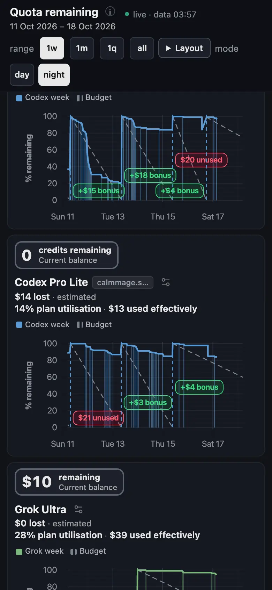

Путь по ссылке: квоты, Gemini отдельно от Antigravity
Ночная доска квот. Два ряда вместо одной шапки Antigravity. Сухой прогон burn, без запуска задач.
http://127.0.0.1:8822/10_uplot/index.html
Петр открывает свою доску. Новый человек без логина видит тот же локальный файл: входа на странице нет. Цифры — его настоящие сэмплы на 17 окт 2026, 03:57.
1. Широкий экран → ряд Gemini

Видит. Четыре карточки: Gemini Pro, Gemini Plus, Gemini Free, Gemini Pro. Легенда «Gemini week» и «Gemini 5h». Фиолетовая линия. Жёлтая рамка на Pro: «Unused quota expires soon».
Жмёт. Название. Всплывает его фраза: «why is it all for antigravity? Is antigravity and Gemini different or the same quota? I'm confused.»
- Оранжевая строка «Data stale · last sample 15 Oct 2026 08:32 PM» на всех Gemini. Ряд есть, точка старая.
- На телефоне эта фраза не всплывает: она в title, не текстом на карточке. Так и задано.
2. Широкий экран → ряд Antigravity

Видит. Отдельные карточки Antigravity Pro, Plus, Free, Pro. Легенда «Claude+GPT week» и «Claude+GPT 5h», бирюзовая линия. Не «Gemini week».
Жмёт. Тот же title с его вопросом 10 октября.
- На Pro написано «$0 lost» и плашка «$0 unused», рядом «75% plan utilisation · $4 used effectively». Ноль на плашке — окно Starter за $0, не пустая строка вместо Gemini.
3. Телефон → Gemini Pro

Видит. Одна колонка. Заголовок «Gemini Pro», логин msuorange, легенда Gemini week / Gemini 5h. График около 210px, не на весь экран. Шапка «Quota remaining» переносится на две строки, кнопки day / night на месте.
Жмёт. Листает вниз: Gemini Plus, Gemini Free. Логин calmmage.shared обрезан до «calmmage.s…».
- Без meta viewport телефон рисовал страницу как 980px и сжимал её. Правила для 430px не включались. Сейчас innerWidth 390, горизонтального скролла нет.
4. Телефон → Antigravity Pro

Видит. «Antigravity Pro», легенда Claude+GPT week / Claude+GPT 5h. Ниже Plus и Free. Это не тот же график, что Gemini.
Жмёт. Ничего обязательного. Ряды идут после Grok Bot, до Muse.
- Между Gemini и Antigravity ещё три карточки Gemini. На одном экране телефона оба названия не помещаются. Это два ряда, не одна карточка.
5. Телефон → карточка кредитов

Видит. «0 credits remaining» стоит над «Codex Pro Lite», не наезжает на заголовок. «$10 remaining» над «Grok Ultra». Строка «14% plan utilisation» переносится, не обрезается.
- Раньше карточка была float:right и на 390px ложилась на заголовок. Сейчас float: none.
Что остаётся руками
Страница только для чтения. Новых кнопок, которые что-то запускают, нет. aiq burn --dry-run печатает кандидатов со статусом «proposed, not run» и dispatch_calls=0. Боевой дашборд на :8876 эта ветка не трогает.
Три застрявшие задачи (Vision board, env-add, instagram) предложены на Codex Sol/Astra. Сорок видений со статусом code предложены на Muse. Fable в строители не назначается.
Главные трения сегодня
- 1 Одна шапка Antigravity на Gemini week и на Claude+GPT. → два ряда: Gemini рисует Gemini week/5h, Antigravity рисует Claude+GPT week/5h. Сделано.
- 2 В деньгах Antigravity был $0, а расход сидел в строке Gemini. → Claude+GPT считается на Antigravity, общий план $20 делится пополам. Сделано.
- 3 На 390px карточка кредитов всплывала на заголовок. → float снят, карточка над следующим заголовком. Сделано.
- 4 График на телефоне не бывал ниже 540px. → минимум 180px, на снимке высота 211px. Сделано.
- 5 Не было viewport: телефон держал вёрстку 980px, и правила 430px не работали. → meta viewport на uplot, plotly, индексе и оболочке /quotas/. Сделано.
Сегодня → новый путь
| Шаг | Было | Стало |
|---|---|---|
| Ряд Google | Всё подписано Antigravity | Gemini и Antigravity рядом, разные серии |
| Деньги | Antigravity $0 | Свой ряд, половина общего плана |
| 390px | Сжатая страница 980px, карточка поверх названия | Колонка 390px, график ~210px, карточка отдельно |
| Burn | Нет сухого прогона | Лог spare %, tier, reason, proposed not run |
С тебя: ничего. Превью локальное, push нет. Gemini не пересемплирован: сухой прогон не тратит квоту.
Открыто: холодная загрузка uPlot с jsDelivr была 1.5 с (повтор 8 мс). Локальные panels.json — 5 мс. Строки Gemini помечены stale с 15 окт 20:32.